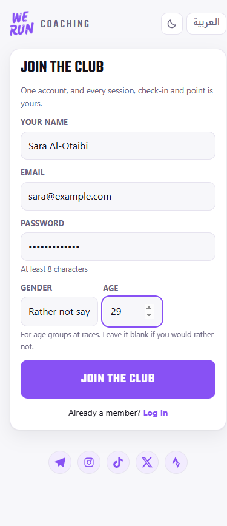
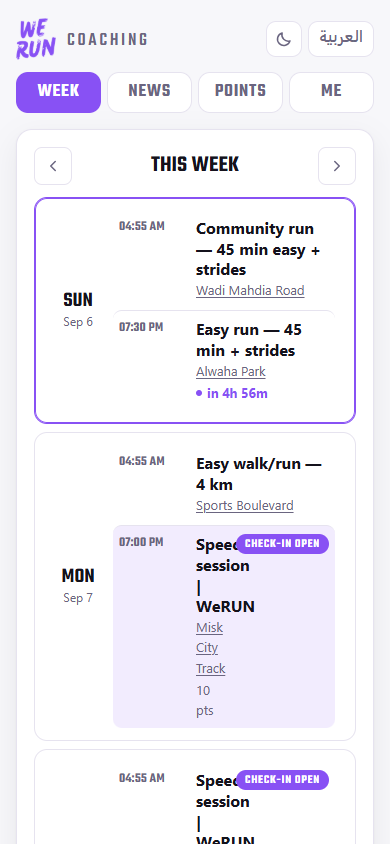
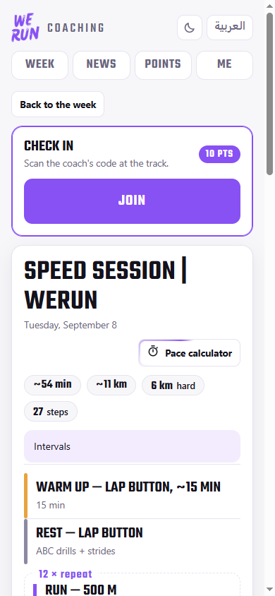
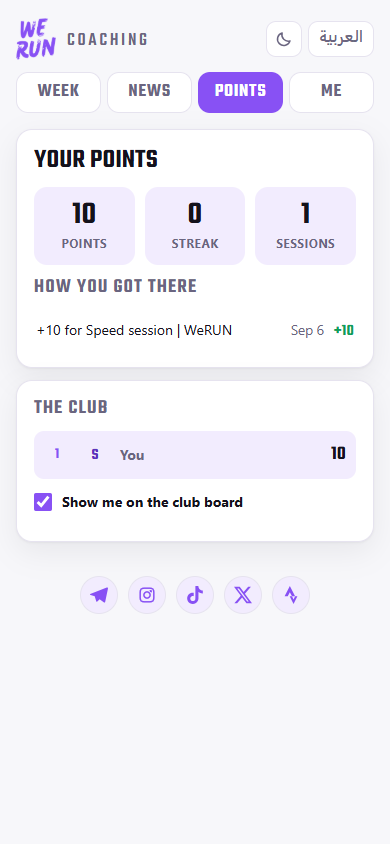
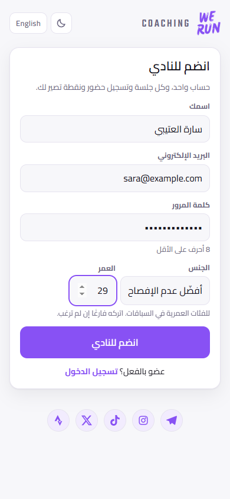
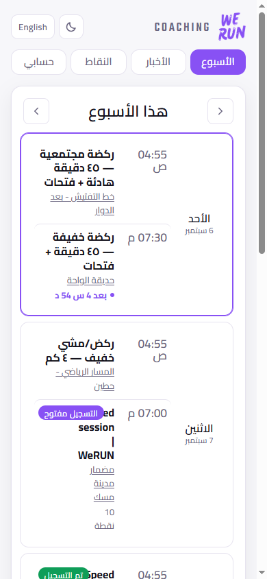
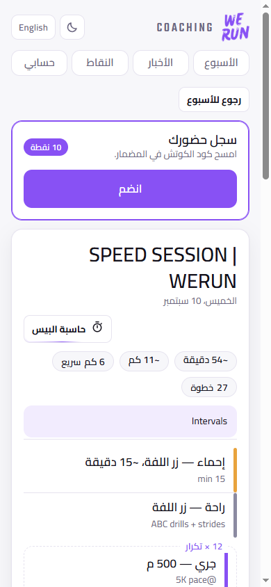
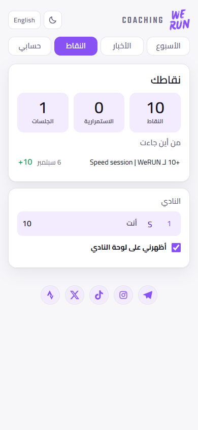

1 · Join, or sign in
- Open weruncoaching.pages.dev/app.html in your phone browser. Add it to your home screen so it opens like an app.
- Tap Join the club. Give your name as the coach knows you, your email, and a password of at least 8 characters. Gender and age are optional, and are only used for age groups at races.
- Already a member? Tap Log in and use the same email and password. Forgot it? Forgot your password sends you a reset link.
- Use العربية at the top to switch the whole app to Arabic, and the moon icon for dark mode.
2 · What is in the app
- Week: the club's whole week, Sunday to Saturday. Every row shows the time, the session, where to meet (tap the place for the map) and what it is worth. Tap a row to open it.
- News: what the coach has written for the club.
- Points: your total, your streak, every check-in that got you there, and the club board.
- Me: your name, avatar, language and password, and the way to log out.
3 · Checking in at the track
- Open the session from the Week screen. If the session has a workout, the full set of steps is there: warm up, intervals and cool down.
- When you arrive, tap the big Join button and point your phone at the code the coach is holding up. Your camera app works too.
- That is it, and the points land straight away. The code changes every 30 seconds, so it has to be scanned at the session; a photo of it will not work later.
Check-in opens well before the session and closes two hours after it starts. Early is fine. If you miss the window, ask the coach.

Join the club

Your week

A session · Join to check in

Your points
١ · انضم أو سجّل الدخول
- افتح weruncoaching.pages.dev/app.html من متصفح جوالك، وأضِفه إلى الشاشة الرئيسية ليفتح مثل التطبيق.
- اضغط انضم إلى النادي. اكتب اسمك كما يعرفك المدرب، وبريدك، وكلمة مرور من ٨ أحرف على الأقل. الجنس والعمر اختياريان، ويُستخدمان لفئات الأعمار في السباقات فقط.
- عضو من قبل؟ اضغط تسجيل الدخول بنفس البريد وكلمة المرور. نسيتها؟ نسيت كلمة المرور يرسل لك رابط تعيين جديدة.
- زر English في الأعلى يبدّل لغة التطبيق كاملًا، وأيقونة القمر تشغّل الوضع الليلي.
٢ · ما الذي في التطبيق
- الأسبوع: أسبوع النادي كاملًا من الأحد إلى السبت. كل سطر يبيّن الوقت والتمرين ومكان اللقاء (اضغط المكان للخريطة) وعدد النقاط. اضغط السطر لفتحه.
- الأخبار: ما يكتبه المدرب للنادي.
- النقاط: مجموعك وسلسلتك وكل تسجيل حضور أوصلك إليه، ولوحة النادي.
- حسابي: الاسم والصورة واللغة وكلمة المرور، ومنه تسجيل الخروج.
٣ · تسجيل الحضور في المضمار
- افتح التمرين من شاشة الأسبوع. إذا كان له تمرين مكتوب ستجد خطواته كاملة: الإحماء والجري والاستشفاء والتهدئة.
- عند وصولك اضغط زر سجّل حضورك الكبير ووجّه الكاميرا إلى الرمز الذي يرفعه المدرب. كاميرا الجوال العادية تعمل أيضًا.
- وانتهى الأمر، وتُضاف النقاط فورًا. الرمز يتغيّر كل ٣٠ ثانية، فلا بد من مسحه في التمرين نفسه؛ صورة له لن تنفع لاحقًا.
التسجيل يفتح قبل التمرين بوقت طويل ويُغلق بعد بدايته بساعتين. الحضور المبكر لا مشكلة فيه، أما بعد إغلاق النافذة فراجع المدرب.

انضم إلى النادي

أسبوعك

التمرين · زر تسجيل الحضور

نقاطك